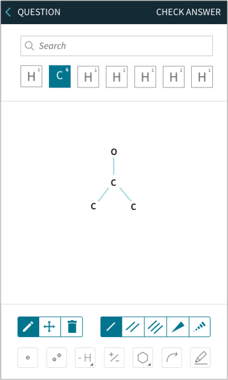
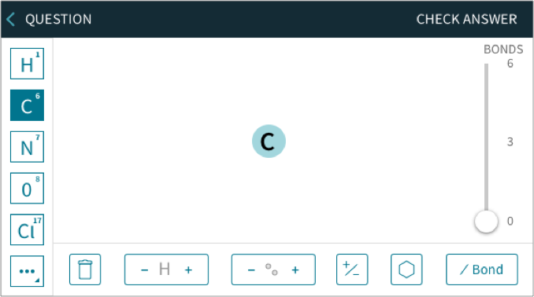
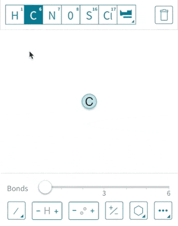

Project Background
This project took place in a targeted higher education STEM (Science, Technology, Engineering, Math) homework platform with an expansive market share, specifically in chemistry.
The product is proven to increase student success. Automatic grading and instantaneous feedback facilitate learning and save instructors time and effort on manual grading. Interactive activities provide a more impactful learning experience than simple multiple-choice type of activities.
Our Goal:
To facilitate higher learning in the chemistry discipline through assessment based molecular drawing.
Definition
Initially, stakeholders were looking for an updated version of the current software, which was built in flash, expecting the update to be mostly visual and using the latest web tech. Student user testing & Instructor interviews of the old flash version of molecular drawing revealed room for improvement.
While user interviews were taking place, competitive analysis revealed that several competitors had raised the bar for Molecular Drawing. By understanding our market, it became clear that merely copying the old molecular drawing was not enough, and this acted as a catalyst for further design & discovery.
I sometimes just go back and do paper, because they have so much trouble drawing the structures. I don’t want to hear all the complaining.
General Chemistry Instructor


Through designing, working with Product, and user testing on a weekly cadence, I saw two potential solutions begin to emerge. These two solutions centered around two very different core drawing mechanics, and to accurately test the interactivity, I created two interactive prototypes that I tested.
Overwhelmingly students said that Design B was easier to use.
Design, Test, Iterate
Following testing, I surveyed 44 instructors, to see if the ease of use in Design B introduced any pedagogical issues - and none were found.
A learning science report study was commissioned to determine if the ease of use in Design B would inhibit learning. Both designs were found to be equal in achieving learning through interactivity.
I designed and tested four more iterations to iron out details like menu comprehension. Through these iterations, some key revisions were made including:
- Words proved better for the menu design than iconography often used in these types of programs
- Automatic zooming
- Uncovering that specific motion design was required when adding to complex structures enabled student comprehension of structural changes.
